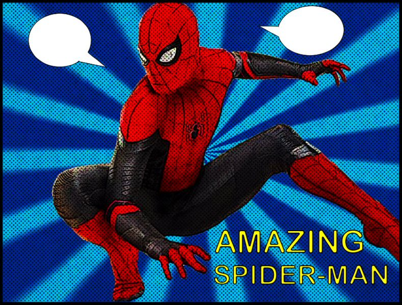
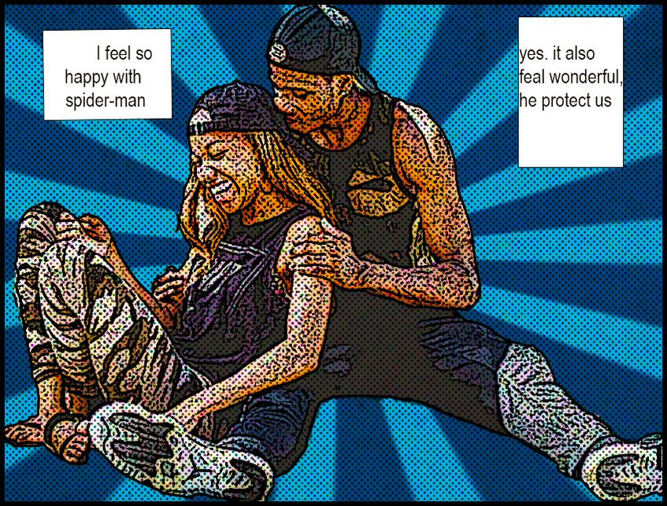

My project is a comic book temple that is illustrated in two images and one animation with 2 images. Thus, the first image shows spider-man as the protector of the people,the animation shows spider-Man through the city and thesecond image shows a couple having a conversation about how they feel with spider-man protection. All this is about how people in society wish to have someone beyond them to protect them. I decided to choose a comic book with the purpose that people feel identified. I believe that this project can be a social cause because when you are living in a big city where crime, violence, and poverty are everywhere we would like to find someone that you feel the need to help change things from the point of view of the most needed.
 